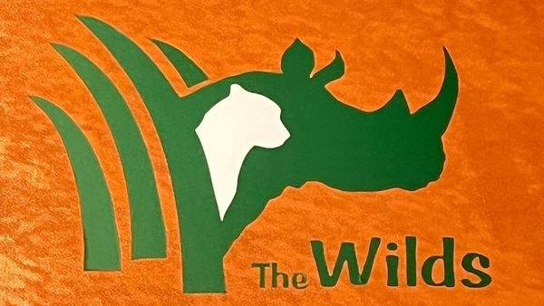

A Morning Safari at The Wilds
The Wilds, Cumberland, Ohio

Well Folks after 3 Years since our last Safari Tour in Ohio, Me & My Zoo Buddy made a Return for Beautiful Morning Safari at The Wilds in Cumberland Ohio, If you haven’t been or heard the Story of The Wilds, then it is time for a history lesson, In 1984,
the Wilds was incorporated as a 501(c)(3) non-profit under the name The International Center for the Preservation of Wild Animals, Inc. (ICPWA), formalizing a public-private partnership involving the Ohio Departments of Natural Resources and Development,
the Ohio Zoos and the private sector that formed in the late-1970s. That same year, the Wilds was gifted its current 9,154 acres (3,704 ha) from the Central Ohio Coal Company. With a location secured, the Wilds began hiring employees, planning development, and organizing fundraising support.
In 1989, the Johnson Visitor Center was completed, built with the environment in mind using a state-of-the-art geothermal heating and cooling system. In 1990, the first animal management facilities and fencing of the initial open range began.
These projects allowed for the Wilds to receive its first animals, Przewalski’s horses in 1992. The Wilds officially opened to the public for tours in 1994. For the next few years, it continued to add animals, improve and expand conservation efforts, and increase public awareness. In 2001,
the Wilds began its partnership with the Columbus Zoo and Aquarium. This culminated in the completion of the first Strategic Vision Plan in 2005, designed to guide the success and future development of the Wilds for the future. Today,
the Wilds continues working on its mission to advance conservation through science, education and personal experience.
Every time when come back here & seeing the gorgeous open pastures it definitely feels like you’re in Africa which is why if you ever make a day trip I recommend you make a visit to The Wilds.
Louie posted this on Facebook — open the original post →